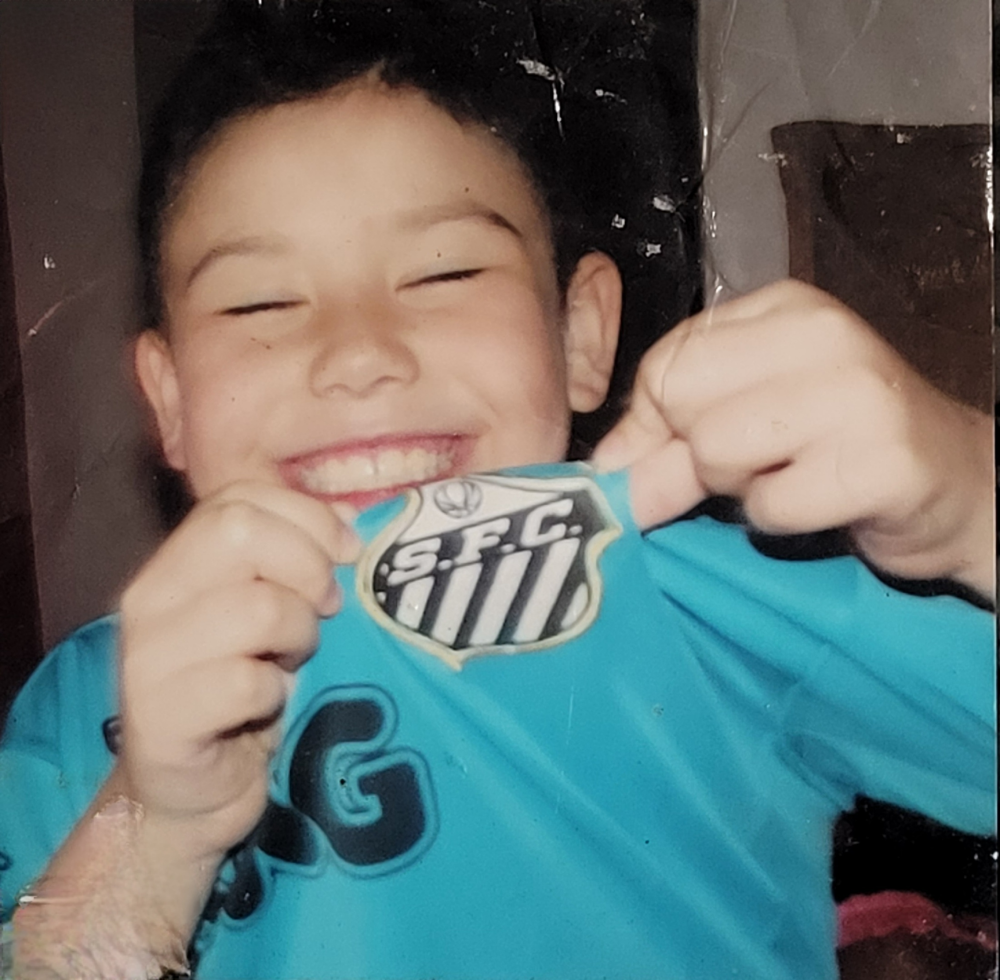

QUIZ

Santos F.C.
monitoring
Estatística
Quiz
Quiz
groups
Seu Time!
logout
Sair
1 - Onde fica a sede da ONG Missão África?
Angola
Moçambique
Sudão
2 - Quem é o maior artilheiro do Santos?
Pelé
Neymar Jr
Ganso
3 - Qual o nome do estádio do Santos F.C.?
Guarujá
Vila Belmiro
Urbano Caldeira
4 - Qual ano o Santos conquistou o Tri-Campeonato da Libertadores?
2011
2012
2010
5 - Em 2002 contra quem o Santos venceu na final do Campeonato Brasileiro?
Flamengo
Corinthians
São Paulo
6 - Em qual estádio o Santos conquistou o seu primeiro Mundial Interclubes?
Estádio Olímpico, Roma-ITA
Maracanã, Rio de Janeiro-BRA
Estádio da Luz, Lisboa-POR
7 - Em 2015 contra quem o Santos venceu na final do Campeonato Paulista?
São Paulo
Palmeiras
Corinthians
8 - De quem foram os gols do Santos no Tri-Campeonato da Libertadores?
Elano e Robinho
Neymar Jr e Ganso
Neymar Jr e Danilo
9 - O Santos já foi rebaixado?
Nunca
Sim, 1 vez
Sim, 2 Vezes
10 - Contra qual time o Santos foi Vice-Campeão no Mundial de clubes em 2011?
Real Madrid
Barcelona
Bayern de Munich
11 - Qual jogador perdeu um gol feito na final da Copa do Brasil 2015 contra o Palmeiras?
Nilson
Ricardo Oliveira
Lucas Lima
12 - Quem era o técnico do Santos em 2012?
Tite
Osvaldo de Oliveira
Muricy Ramalho
13 - Qual nome do Presidente atual do Santos?
Paulo Machado
Andrés Rueda
Ricardo Broen
14 - Quando foi o ultimo título Brasileiro do Santos?
2004
2002
2014
15 - Qual jogador marcou o gol 12.000 da hístoria do Santos?
Ricardo Oliveira
Neymar
Gabriel Barbosa (Gabigol)
Corrigir
Quantidade acertadas: